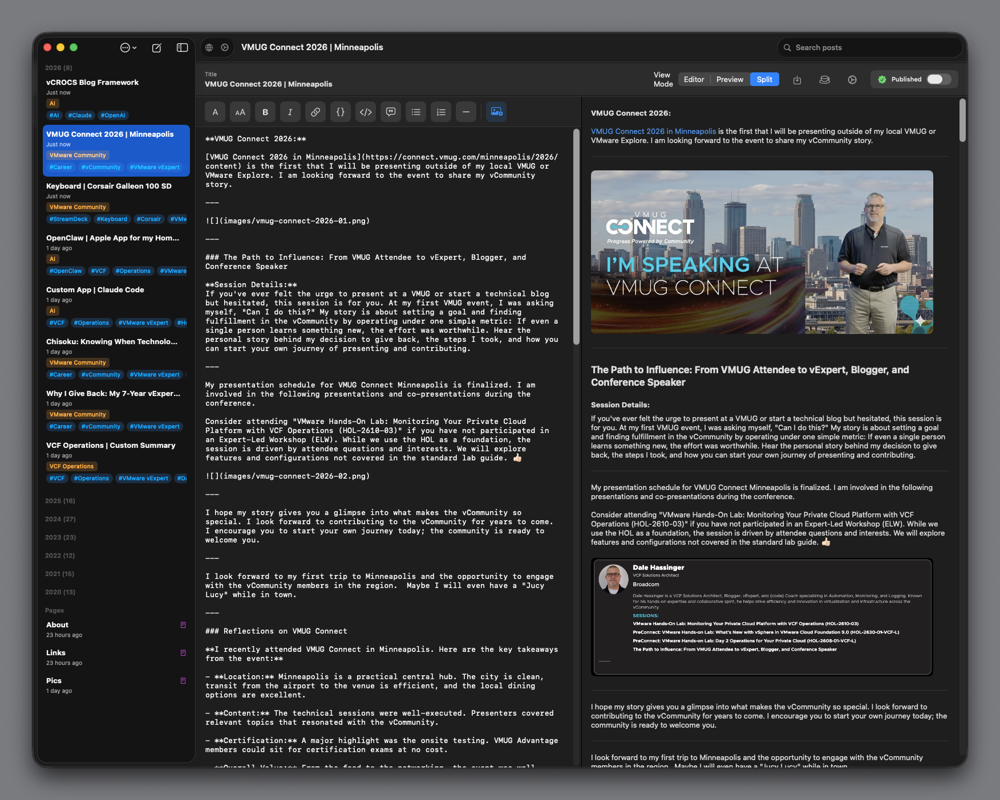
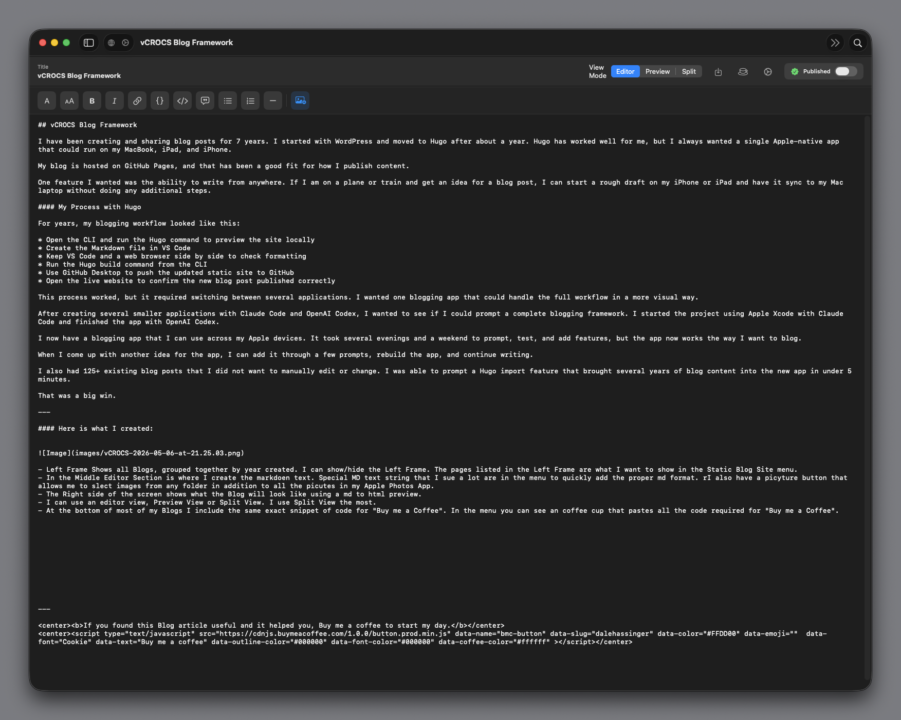
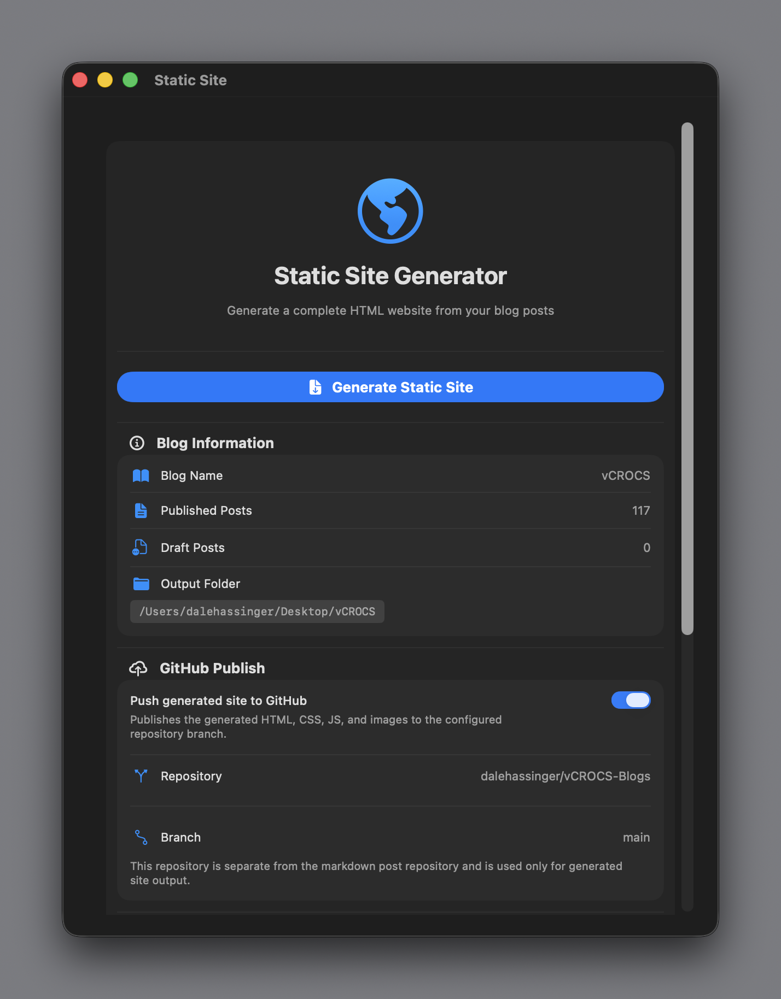
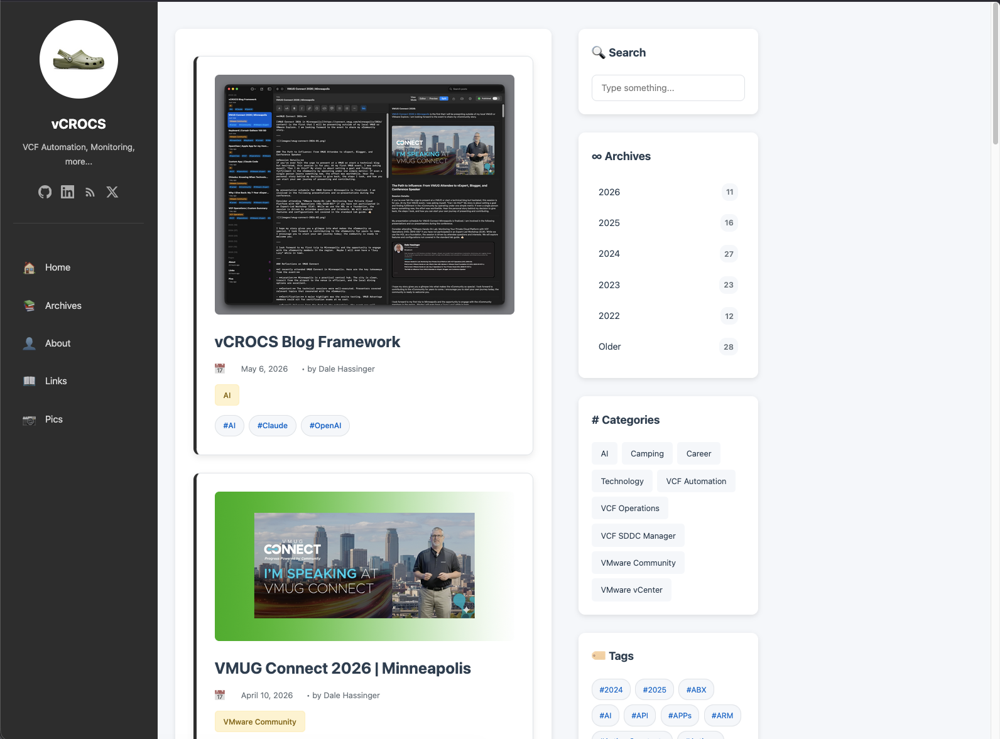

vCROCS Blog Framework

vCROCS Blog Framework
I have been creating and sharing blog posts for 7 years. I started with WordPress and moved to Hugo after about a year. Hugo has worked well for me, but I always wanted a single Apple-native app that could run on my MacBook, iPad, and iPhone.
My blog is hosted on GitHub Pages, and that has been a good fit for how I publish content.
One feature I wanted was the ability to write from anywhere. If I am on a plane or train and get an idea for a blog post, I can start a rough draft on my iPhone or iPad and have it sync to my Mac laptop without doing any additional steps.
My Process with Hugo
For years, my blogging workflow looked like this:
- Open the CLI and run the Hugo command to preview the site locally
- Create the Markdown file in VS Code
- Keep VS Code and a web browser side by side to check formatting
- Run the Hugo build command from the CLI
- Use GitHub Desktop to push the updated static site to GitHub
- Open the live website to confirm the new blog post published correctly
This process worked, but it required switching between several applications. I wanted one blogging app that could handle the full workflow in a more visual way.
After creating several smaller applications with Claude Code and OpenAI Codex, I wanted to see if I could prompt a complete blogging framework. I started the project using Apple Xcode with Claude Code and finished the app with OpenAI Codex.
I now have a blogging app that I can use across my Apple devices. It took several evenings and a weekend to prompt, test, and add features, but the app now works the way I want to blog.
When I come up with another idea for the app, I can add it through a few prompts, rebuild the app, and continue writing.
I also had 125+ existing blog posts that I did not want to manually edit or change. I was able to prompt a Hugo import feature that brought several years of blog content into the new app in under 5 minutes.
That was a big win.
Included Features:
The blog framework includes several features to help with writing, managing, previewing, and publishing blog content.
Content Management:
- Import existing Hugo Markdown files
- Group blog posts by year created
- Search blog posts inside the app
- Add categories and tags to each blog post
- Mark a blog post as a menu item or website page
- Control how many blog posts are shown per page
Writing and Editing:
- Quickly paste common Markdown and HTML strings from menu buttons
- Add photos from any folder or from the Apple Photos app
- Include a picture lightbox for images
Preview and Static Site Generation:
- Create a local copy of the generated static blog site and automatically launch a browser to preview the site
- Generates a desktop and mobile-friendly blog site
- Includes search in the generated static website
GitHub and Publishing:
- Define GitHub repositories used by the app
- Store and use GitHub API keys
- Push all blog content to a GitHub repository for backup
- Push the generated static blog site to a GitHub repository
Backup and Restore:
- Backup and restore all app settings
- Backup and restore all blog content
Here is what I created:
Blog Editor Layout:
- The app layout is simple and easy to use.
Left Frame:
- The left frame shows all blog posts grouped by the year they were created.
- I can show or hide this frame when I need more writing space.
- The pages listed in the left frame are also the pages I want to show in the static blog site menu.
Middle Editor:
- The middle section is where I write the blog post in Markdown.
- I added menu buttons for Markdown text strings that I use often. This makes it easy to insert the correct Markdown format without typing it each time.
- There is also a picture button that lets me add images from any folder or from the Apple Photos app.
Right Preview:
- The right side of the screen shows a preview of the blog post.
- The app converts the Markdown to HTML so I can see how the post will look before publishing.
Editor Views:
The app includes three view options:
- Editor View
- Preview View
- Split View
I use Split View the most because I can write and preview the blog post at the same time.
Reusable Code Snippets:
- At the bottom of most of my blog posts, I include the same “Buy Me a Coffee” code snippet.
- I added a coffee cup menu button that pastes all the required code into the post.

- Example of only the editor section of the window enabled.

- All the setting for the Blog post in a single window.

- Publish the Blog Site local to review before pushing to GitHub.

- Static Site Generator Screen

- Blog Site Settings

- The Main Blog Site Page, the finished Product!

- I wanted a menu to paste in text that I use the most with my blogs
Lessons Learned:
- So far, I am very happy with what I was able to create using Xcode, Claude Code, and OpenAI Codex.
- I am making small changes one step at a time.
- This has made it easier to test features and keep the app working.
- The new RSS feed is much better than what I had before with Hugo.
- The search feature that Codex created for the published site was worth the change by itself.
- I would encourage anyone reading this to take some time and see what they can create with these tools.